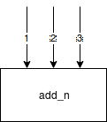
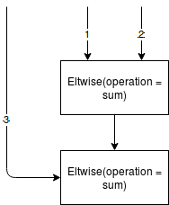
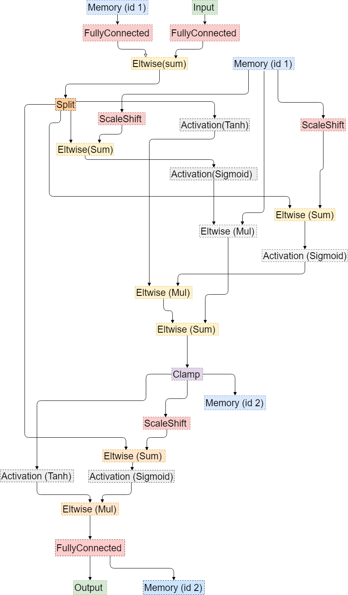
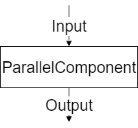
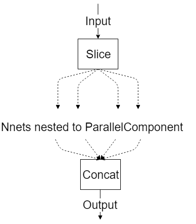
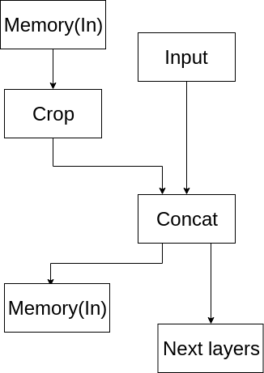

Standard Caffe* layers:
| Number | Layer Name in Caffe* | Layer Name in the Intermediate Representation |
|---|---|---|
| 1 | Input | Input |
| 2 | GlobalInput | Input |
| 3 | InnerProduct | FullyConnected |
| 4 | Dropout | Ignored, does not appear in IR |
| 5 | Convolution | Convolution |
| 6 | Deconvolution | Deconvolution |
| 7 | Pooling | Pooling |
| 8 | BatchNorm | BatchNormalization |
| 9 | LRN | Norm |
| 10 | Power | Power |
| 11 | ReLU | ReLU |
| 12 | Scale | ScaleShift |
| 13 | Concat | Concat |
| 14 | Eltwise | Eltwise |
| 15 | Flatten | Flatten |
| 16 | Reshape | Reshape |
| 17 | Slice | Slice |
| 18 | Softmax | SoftMax |
| 19 | Permute | Permute |
| 20 | ROIPooling | ROIPooling |
| 21 | Tile | Tile |
| 22 | ShuffleChannel | Reshape + Split + Permute + Concat |
| 23 | Axpy | ScaleShift + Eltwise |
| 24 | BN | ScaleShift |
| 25 | DetectionOutput | DetectionOutput |
| 26 | StridedSlice | StridedSlice |
| 27 | Bias | Eltwise(operation = sum) |
Standard MXNet* symbols:
| Number | Symbol Name in MXNet* | Layer Name in the Intermediate Representation |
|---|---|---|
| 1 | BatchNorm | BatchNormalization |
| 2 | Crop | Crop |
| 3 | ScaleShift | ScaleShift |
| 4 | Pooling | Pooling |
| 5 | SoftmaxOutput | SoftMax |
| 6 | SoftmaxActivation | SoftMax |
| 7 | null | Ignored, does not appear in IR |
| 8 | Convolution | Convolution |
| 9 | Deconvolution | Deconvolution |
| 10 | Activation(act_type = relu) | ReLU |
| 11 | ReLU | ReLU |
| 12 | LeakyReLU | ReLU (negative_slope = 0.25) |
| 13 | Concat | Concat |
| 14 | elemwise_add | Eltwise(operation = sum) |
| 15 | _Plus | Eltwise(operation = sum) |
| 16 | Flatten | Flatten |
| 17 | Reshape | Reshape |
| 18 | FullyConnected | FullyConnected |
| 19 | UpSampling | Resample |
| 20 | transpose | Permute |
| 21 | LRN | Norm |
| 22 | L2Normalization | Normalize |
| 23 | Dropout | Ignored, does not appear in IR |
| 24 | _copy | Ignored, does not appear in IR |
| 25 | _contrib_MultiBoxPrior | PriorBox |
| 26 | _contrib_MultiBoxDetection | DetectionOutput |
| 27 | broadcast_mul | ScaleShift |
| 28 | sigmoid | sigmoid |
| 29 | Activation (act_type = tanh) | Activation (operation = tanh) |
| 30 | LeakyReLU (act_type = prelu) | PReLU |
| 31 | LeakyReLU (act_type = elu) | Activation (operation = elu) |
| 32 | elemwise_mul | Eltwise (operation = mul) |
| 33 | add_n

| Eltwise (operation = sum)

|
| 34 | ElementWiseSum | Eltwise (operation = sum) or ScaleShift |
| 35 | _mul_scalar | Power |
| 36 | broadcast_add | Eltwise (operation = sum) |
| 37 | slice_axis | Crop |
| 38 | Custom | Custom Layers in the Model Optimizer |
| 39 | _minus_scalar | Power |
| 40 | Pad | Pad |
| 41 | _contrib_Proposal | Proposal |
| 42 | ROIPooling | ROIPooling |
| 43 | stack | Concat |
| 44 | swapaxis | Permute |
| 45 | zeros | Const |
| 45 | rnn | TensorIterator |
| 46 | rnn_param_concat | Concat |
| 47 | slice_channel | Split |
| 48 | _maximum | Eltwise(operation = max) |
| 49 | _minimum | Power(scale=-1) + Eltwise(operation = max) + Power(scale=-1) |
| 50 | InstanceNorm | scale * (x - mean) / sqrt(variance + epsilon) + B |
| 51 | Embedding | Gather |
| 52 | DeformableConvolution | DeformableConvolution |
| 53 | DeformablePSROIPooling | PSROIPooling (method=deformable) |
| 54 | Where | Select |
| 55 | exp | Exp |
| 56 | slice_like | Crop |
| 57 | div_scalar | Power(power = -1) + Eltwise(operation = mul) |
| 58 | minus_scalar | Eltwise(operation = sum) + Power(scale=-1) |
| 59 | greater_scalar | Eltwise(operation=Greater) |
| 60 | elemtwise_sub | Eltwise(operation = sum) + Power(scale=-1) |
| 61 | expand_dims | Unsqueeze |
Some TensorFlow* operations do not match to any Inference Engine layer, but are still supported by the Model Optimizer and can be used on constant propagation path. These layers are labeled 'Constant propagation' in the table.
Standard TensorFlow* operations:
| Number | Operation Name in TensorFlow | Layer Name in the Intermediate Representation |
|---|---|---|
| 1 | Transpose | Permute |
| 2 | LRN | Norm |
| 3 | Split | Split |
| 4 | SplitV | Split |
| 5 | FusedBatchNorm | ScaleShift (can be fused into Convolution or FullyConnected) |
| 6 | Relu6 | Clamp |
| 7 | DepthwiseConv2dNative | Convolution |
| 8 | ExpandDims | Unsqueeze |
| 9 | Slice | Split |
| 10 | ConcatV2 | Concat |
| 11 | MatMul | FullyConnected |
| 12 | Pack | Reshapes and Concat |
| 13 | StridedSlice | StridedSlice or Split |
| 14 | Prod | Constant propagation |
| 15 | Const | Const |
| 16 | Tile | Tile |
| 17 | Placeholder | Input |
| 18 | Pad | Fused into Convolution or Pooling layers (not supported as single operation) |
| 19 | Conv2D | Convolution |
| 20 | Conv2DBackpropInput | Deconvolution |
| 21 | Identity | Ignored, does not appear in the IR |
| 22 | Add | Eltwise(operation = sum) or ScaleShift |
| 23 | Mul | Eltwise(operation = mul) |
| 24 | Maximum | Eltwise(operation = max) |
| 25 | Rsqrt | Power(power=-0.5) |
| 26 | Neg | Power(scale=-1) |
| 27 | Sub | Eltwise(operation = sum) + Power(scale=-1) |
| 28 | Relu | ReLU |
| 29 | AvgPool | Pooling (pool_method=avg) |
| 30 | MaxPool | Pooling (pool_method=max) |
| 31 | Mean | Pooling (pool_method = avg) (sequential reduce dimensions are supported only) |
| 32 | RandomUniform | Not supported |
| 33 | BiasAdd | Fused or converted to ScaleShift |
| 34 | Reshape | Reshape |
| 35 | Squeeze | Squeeze |
| 36 | Shape | Constant propagation (or layer generation if the "--keep_shape_ops" command line parameter has been specified) |
| 37 | Softmax | SoftMax |
| 38 | SpaceToBatchND | Supported in a pattern when converted to Convolution layer dilation attribute, Constant propagation |
| 39 | BatchToSpaceND | Supported in a pattern when converted to Convolution layer dilation attribute, Constant propagation |
| 40 | StopGradient | Ignored, does not appear in IR |
| 41 | Square | Constant propagation |
| 42 | Sum | Pool(pool_method = avg) + Eltwise(operation = mul) |
| 43 | Range | Constant propagation |
| 44 | CropAndResize | ROIPooling (if the the method is 'bilinear') |
| 45 | ArgMax | ArgMax |
| 46 | DepthToSpace | Reshape + Permute + Reshape (works for CPU only because of 6D tensors) |
| 47 | ExtractImagePatches | ReorgYolo |
| 48 | ResizeBilinear | Interp |
| 49 | ResizeNearestNeighbor | Resample |
| 50 | Unpack | Split + Reshape (removes dimension being unpacked) if the number of parts is equal to size along given axis |
| 51 | AddN | Several Eltwises |
| 52 | Concat | Concat |
| 53 | Minimum | Power(scale=-1) + Eltwise(operation = max) + Power(scale=-1) |
| 54 | TopkV2 | TopK |
| 55 | RealDiv | Power(power = -1) and Eltwise(operation = mul) |
| 56 | SquaredDifference | Power(scale = -1) + Eltwise(operation = sum) + Power(power = 2) |
| 57 | Gather | Gather |
| 58 | GatherV2 | Gather |
| 59 | ResourceGather | Gather |
| 60 | Sqrt | Power(power=0.5) |
| 61 | Square | Power(power=2) |
| 62 | Pad | Pad |
| 63 | PadV2 | Pad |
| 64 | MirrorPad | Pad |
| 65 | ReverseSequence | ReverseSequence |
| 66 | ZerosLike | Constant propagation |
| 67 | Fill | Broadcast |
| 68 | Cast | Cast to the following data types are removed from the graph float32, double, int32, int64 |
| 69 | Enter | Supported only when it is fused to the TensorIterator layer |
| 70 | Exit | Supported only when it is fused to the TensorIterator layer |
| 71 | LoopCond | Supported only when it is fused to the TensorIterator layer |
| 72 | Merge | Supported only when it is fused to the TensorIterator layer |
| 73 | NextIteration | Supported only when it is fused to the TensorIterator layer |
| 74 | TensorArrayGatherV3 | Supported only when it is fused to the TensorIterator layer |
| 75 | TensorArrayReadV3 | Supported only when it is fused to the TensorIterator layer |
| 76 | TensorArrayScatterV3 | Supported only when it is fused to the TensorIterator layer |
| 77 | TensorArraySizeV3 | Supported only when it is fused to the TensorIterator layer |
| 78 | TensorArrayV3 | Supported only when it is fused to the TensorIterator layer |
| 79 | TensorArrayWriteV3 | Supported only when it is fused to the TensorIterator layer |
| 80 | Equal | Eltwise(operation = equal) |
| 81 | Exp | Eltwise(operation = exp) |
| 82 | Greater | Eltwise(operation = greater) |
| 83 | GreaterEqual | Eltwise(operation = greater_equal) |
| 84 | Less | Eltwise(operation = less) |
| 85 | LogicalAnd | Eltwise(operation = logical_and) |
| 86 | Min | Constant propagation |
| 87 | Max | Reshape + Pooling (pool_method=max) + Reshape |
| 88 | GatherNd | Supported if it can be replaced with Gather |
| 89 | PlaceholderWithDefault | Const |
| 90 | Rank | Constant propagation |
| 91 | Round | Constant propagation |
| 92 | Sigmoid | Activation(operation = sigmoid) |
| 93 | Size | Constant propagation |
| 94 | Switch | Control flow propagation |
| 94 | Swish | Mul(x, Sigmoid(x)) |
Standard Kaldi* Layers:
| Number | Layer Name in Kaldi* | Layer name in the Intermediate Representation |
|---|---|---|
| 1 | AddShift | Will be fused or converted to ScaleShift |
| 2 | AffineComponent | FullyConnected |
| 3 | AffineTransform | FullyConnected |
| 4 | ConvolutionalComponent | Convolution |
| 5 | Convolutional1DComponent | Convolution |
| 6 | FixedAffineComponent | FullyConnected |
| 7 | LstmProjected |

|
| 8 | LstmProjectedStreams | The same as for LstmProjected |
| 9 | MaxPoolingComponent | Pooling (pool_method = max) |
| 10 | NormalizeComponent | ScaleShift |
| 11 | RectifiedLinearComponent | ReLU |
| 12 | ParallelComponent

|

|
| 13 | Rescale | Will be fused or converted to ScaleShift |
| 14 | Sigmoid | Activation (operation = sigmoid) |
| 15 | Softmax | Softmax |
| 16 | SoftmaxComponent | Softmax |
| 17 | SpliceComponent |

|
| 18 | TanhComponent | Activation (operation = tanh) |
Standard ONNX* operators:
| Number | Operator name in ONNX* | Layer type in the Intermediate Representation |
|---|---|---|
| 1 | Add | Eltwise(operation = sum) (added 'axis' support) or ScaleShift |
| 2 | AveragePool | Pooling (pool_method=avg) |
| 3 | BatchNormalization | ScaleShift (can be fused into Convlution or FC) |
| 4 | Concat | Concat |
| 5 | Constant | Const |
| 6 | Conv | Convolution |
| 7 | ConvTranspose | Deconvolution (added auto_pad and output_shape attributes support)) |
| 8 | Div | Eltwise(operation = mul)->Power |
| 9 | Dropout | Ignored, does not apeear in IR |
| 10 | Elu | Activation (ELU) |
| 11 | Flatten | Reshape |
| 12 | Gemm | FullyConnected or GEMM depending on inputs |
| 13 | GlobalAveragePool | Pooling (pool_method=avg) |
| 14 | Identity | Ignored, does not appear in IR |
| 15 | LRN | Norm |
| 16 | LeakyRelu | ReLU |
| 17 | MatMul | FullyConnected |
| 17 | MaxPool | Pooling (pool_method=max) |
| 19 | Mul | Eltwise(operation = mul) (added axis support) |
| 20 | Relu | ReLU |
| 21 | Reshape | Reshape |
| 22 | Shape | Constant propagation |
| 23 | Softmax | SoftMax |
| 24 | Squeeze | Squeeze |
| 25 | Sub | Power->Eltwise(operation = sum) |
| 26 | Sum | Eltwise(operation = sum) |
| 27 | Transpose | Permute |
| 28 | Unsqueeze | Reshape |
| 29 | Upsample | Resample |
| 30 | ImageScaler | ScaleShift |
| 31 | Affine | ScaleShift |
| 32 | Reciprocal | Power(power=-1) |
| 33 | Crop | Split |
| 34 | Tanh | Activation (operation = tanh) |
| 35 | Sigmoid | Activation (operation = sigmoid) |
| 36 | Pow | Power |
| 37 | ConvTranspose | |
| 38 | Gather | Gather |
| 39 | ConstantFill | Constant propagation |
| 40 | ReduceMean | Reshape + Pooling(pool_method=avg) + Reshape (sequential reduce dimensions are supported only) |
| 41 | ReduceSum | Reshape + Pooling(pool_method=avg) + Power(scale=reduce_dim_size) + Reshape (sequential reduce dimensions are supported only) |
| 42 | Gather | Gather |
| 43 | Gemm | GEMM |
| 44 | GlobalMaxPool | Pooling (pool_method=max) |
| 45 | Neg | Power(scale=-1) |
| 46 | Pad | Pad |
| 47 | ArgMax | ArgMax |
| 48 | Clip | Clamp |
| 49 | DetectionOutput (Intel experimental) | DetectionOutputONNX |
| 50 | PriorBox (Intel experimental) | PriorBoxONNX |
| 51 | RNN | TensorIterator(with RNNCell in a body) |
| 52 | GRU | TensorIterator(with GRUCell in a body) |
| 53 | LSTM | TensorIterator(with LSTMCell in a body) |
| 54 | FakeQuantize (Intel experimental) | FakeQuantize |
| 55 | Erf | Erf |
| 56 | BatchMatMul | GEMM |
| 57 | SpaceToDepth | Reshape + Permute + Reshape |
| 58 | Fill | Broadcast |
| 59 | Select | Select |
| 60 | OneHot | OneHot |
| 61 | TopK | TopK |
| 62 | GatherTree | GatherTree |
| 63 | LogicalAnd | Eltwise(operation = LogicalAnd) |
| 64 | LogicalOr | Eltwise(operation = LogicalOr) |
| 65 | Equal | Eltwise(operation = Equal) |
| 66 | NotEqual | Eltwise(operation = NotEqual) |
| 67 | Less | Eltwise(operation = Less) |
| 68 | LessEqual | Eltwise(operation = LessEqual) |
| 69 | Greater | Eltwise(operation = Greater) |
| 70 | GreaterEqual | Eltwise(operation = GreaterEqual) |
| 71 | ConstantOfShape | Broadcast |
| 72 | Expand | Broadcast |
| 73 | Not | Activation (operation = not) |
| 74 | ReduceMin | ReduceMin |
| 75 | NonMaxSuppression | NonMaxSuppression |
| 76 | Floor | Activation (operation = floor) |
| 77 | Slice | Split or StridedSlice |